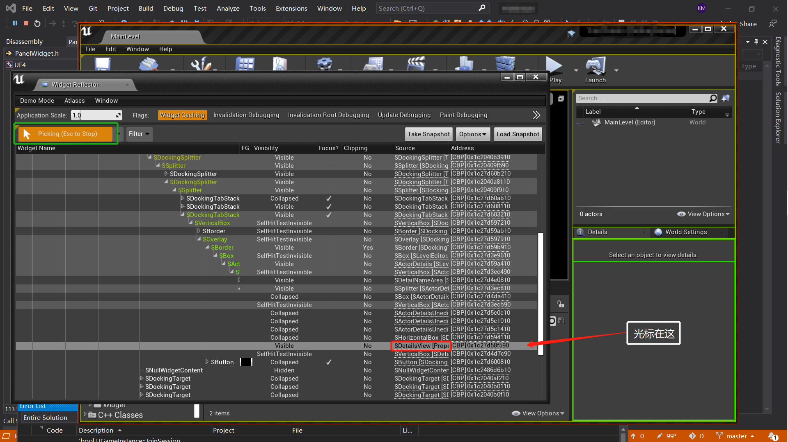
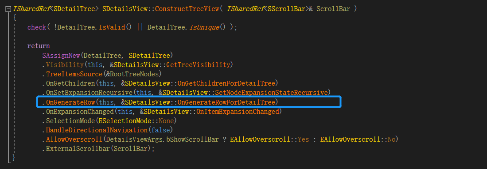

# Unreal Slate简介：本篇将从编辑器的 "Detail" 面板开始，分析 "SDetailView" 的底层实现，紧接着总结实现简单 Slate 类所需要的步骤，最后做一个给蓝图用的 "高达零件" 😃
"Widget Reflector" (Widget 反射器) 是虚幻提供给开发者查看编辑器中 Widget 的布局 的一个工具，也可以说是一个内嵌的插件 (我们讲插件的时候会具体分析 "Widget Reflector" 的具体实现)。那么我们先看看怎么用这个工具吧 😃

使用方法：
Menu Bar -> Window -> Developer Tools -> Widget Reflector 点击绿色框框的 "Pick Widget"，然后将光标移动到你想查看的 "Widget" 中 按下 Esc 键，即可定格当前 "Widget" 定位 可以看到我们上面定位的是 编辑器主界面的 Details 面板，Widget 反射器中给我们的信息有：该 Widget 的布局与从属关系，Widget 的一些属性 (是否可见，当前是否 focus 等)，Widget 的源代码，Widget 的地址。Widget 反射器告诉我们，实现细节面板的源代码是 "SDetailsView"，那咱也是二话不说，直接分析 "SDetailsView" 的源码，开冲（￣︶￣）↗
# Details View 的实现在分析 "SDetailsView" 的源码之前，我们需要知道虚幻的 Slate 框架有以下几个特点：
Slate 类都是以 'S' 开头的，如："SDetialsView" Slate 类都继承于 "SWidget"，而不是 "UObject" Slate 对象不受 GC 管理，所以通常用共享指针来构造 Slate 对象 以下是 "SDetailsView" 的源码实现：
SDetailView 1 2 3 4 5 6 7 8 9 10 11 12 class SDetailsView :public SDetailsViewBase{ friend class FPropertyDetailsUtilities ; public : SLATE_BEGIN_ARGS (SDetailsView){} SLATE_END_ARGS () }
"SDetailsView" 一开始就给咱整了两个宏，"SLATE_BEGIN_ARGS" , SLATE_END_ARGS"。从宏的名字来看，这俩似乎是一对的，用来定义 Slate 类的变量。事实也确实就是如此，我们直接看看宏定义吧。
SLATE_BEGIN_ARGS 1 2 3 4 5 6 7 8 9 10 11 12 #define SLATE_BEGIN_ARGS( WidgetType ) \ public: \ struct FArguments : public TSlateBaseNamedArgs<WidgetType> \ { \ typedef FArguments WidgetArgsType; \ FORCENOINLINE FArguments() #define SLATE_END_ARGS() \ };
研究过 Slate 源码的同学应该知道，Slate 定义变量的宏其实还有很多。但其实都只不过是在定义一些 "FArguments" 的属性，实现上也比较简单，我们就不展开分析了。当然还有一些用来添加 Slot 和重载运算符的 (比如：SLATE_SUPPORTS_SLOT) ，对整个 Slate 系统理解比较重要的宏，我们会在下文进行分析
回到上面的代码分析。不难发现， SLATE_BEGIN_ARGS( WidgetType ) 其实就是定义了一个公开的结构体 "FArguments" (从名字来看，这个结构体是用来储存变量的)，和 "FArguments" 的别名 "WidgetArgsType"，以及一个非内联的构造函数。而 SLATE_END_ARGS() 只是为了给 BEGIN 宏定义出来的结构体加上 ' } ' ，作为结构体定义的结束。
展开后的代码如下：
FArguments 1 2 3 4 5 6 7 8 9 10 11 12 class SDetailsView :public SCompoundWidget{ public : struct FArguments :public TSlateBaseNamedArgs<SDetailView> { typedef FArguments WidgetArgsType; FORCENOINLINE FArguments () {} } };
如你所见，这两个宏只是在 "SDetailView" 中内嵌了一个 public 的结构体，这个结构体存着 "SDetailView" 所需的所有设置数据，包括 "ToopTip"，"Visibility" (基类 "TSlateBaseNamedArgs" 中的)，以及我们自己用宏传进去的变量和函数（这里没传）。
在分析函数之前，我们需要知道 "SDetailsView" 里面都有哪些变量要我们设置的 (基类的变量先不需要了解)
SDetailsView 1 2 3 4 5 6 7 8 9 10 11 12 13 14 15 16 17 18 19 20 21 22 23 24 25 26 27 28 29 30 31 32 class SDetailsView :public SDetailsViewBase{ private : TSharedPtr<FDetailsViewObjectFilter> ObjectFilter; FSelectedActorInfo SelectedActorInfo; TArray<TWeakObjectPtr<UObject>> UnfilteredSelectedObjects; TArray<TWeakObjectPtr<UObject>> SelectedObjects; TArray< TWeakObjectPtr<AActor> > SelectedActors; TArray<TSharedPtr<FComplexPropertyNode>> RootPropertyNodes; FOnObjectArrayChanged OnObjectArrayChanged; TSharedPtr<IDetailRootObjectCustomization> RootObjectCustomization; bool bViewingClassDefaultObject; }
单看注释可能不太好理解，上面的属性主要是在我们选择多个对象时，细节面板要对我们选择的对象进行筛选 (哪些对象显示哪些不显示，怎么显示) 时使用的属性。
咱继续往下看，"Construct" 的实现如下（代码比较长）：
SDetailsView_2 1 2 3 4 5 6 7 8 9 10 11 12 13 14 15 16 17 18 19 20 21 22 23 24 25 26 27 28 29 30 31 32 33 34 35 36 37 38 39 40 41 42 43 44 45 46 47 48 49 50 51 52 53 54 55 56 57 58 59 60 61 62 63 64 65 66 67 68 69 70 71 72 73 74 75 76 77 78 79 80 81 82 83 84 85 86 87 88 89 90 91 92 93 94 95 96 97 98 99 100 101 102 103 104 105 106 107 108 109 110 111 112 113 114 115 116 117 118 119 120 121 122 123 124 125 126 127 128 129 130 131 132 133 134 135 136 137 138 139 140 141 142 143 144 145 146 147 148 149 150 151 152 153 154 155 156 157 158 159 160 161 162 163 164 165 166 167 168 169 170 171 172 173 174 175 176 177 178 179 180 181 182 183 184 185 186 187 188 189 190 191 192 193 194 195 196 197 198 199 200 201 202 203 204 205 206 207 208 209 210 211 212 213 214 215 216 217 218 219 220 221 222 223 224 225 226 227 228 void SDetailsView::Construct (const FArguments& InArgs, const FDetailsViewArgs& InDetailsViewArgs) DetailsViewArgs = InDetailsViewArgs; SetObjectFilter (InDetailsViewArgs.ObjectFilter); bViewingClassDefaultObject = false ; PropertyUtilities = MakeShareable ( new FPropertyDetailsUtilities ( *this ) ); PropertyGenerationUtilities = MakeShareable ( new FDetailsViewPropertyGenerationUtilities (*this ) ); ColumnWidth = DetailsViewArgs.ColumnWidth; ColumnSizeData.LeftColumnWidth = TAttribute<float >( this , &SDetailsView::OnGetLeftColumnWidth ); ColumnSizeData.RightColumnWidth = TAttribute<float >( this , &SDetailsView::OnGetRightColumnWidth ); ColumnSizeData.OnWidthChanged = SSplitter::FOnSlotResized::CreateSP ( this , &SDetailsView::OnSetColumnWidth ); TSharedRef<SScrollBar> ExternalScrollbar = SNew (SScrollBar); ExternalScrollbar->SetVisibility ( TAttribute<EVisibility>( this , &SDetailsView::GetScrollBarVisibility ) ); FMenuBuilder DetailViewOptions ( true , nullptr ) ; if (DetailsViewArgs.bShowModifiedPropertiesOption) { DetailViewOptions.AddMenuEntry ( LOCTEXT ("ShowOnlyModified" , "Show Only Modified Properties" ), LOCTEXT ("ShowOnlyModified_ToolTip" , "Displays only properties which have been changed from their default" ), FSlateIcon (), FUIAction ( FExecuteAction::CreateSP ( this , &SDetailsView::OnShowOnlyModifiedClicked ), FCanExecuteAction (), FIsActionChecked::CreateSP ( this , &SDetailsView::IsShowOnlyModifiedChecked ) ), NAME_None, EUserInterfaceActionType::ToggleButton ); } if (DetailsViewArgs.bShowCustomFilterOption) { } if ( DetailsViewArgs.bShowDifferingPropertiesOption ) { } if (DetailsViewArgs.bShowKeyablePropertiesOption) { } if (DetailsViewArgs.bShowAnimatedPropertiesOption) { } FilterRow = SNew ( SHorizontalBox ) .Visibility ( this , &SDetailsView::GetFilterBoxVisibility ) +SHorizontalBox::Slot () .FillWidth ( 1 ) [ SNew (SOverlay) +SOverlay::Slot () .Padding (0.0f , 0.0f , 0.0f , 0.0f ) [ SNew (SImage) .Image (FEditorStyle::GetBrush ("Searching.SearchActiveTab" )) .Visibility_Lambda ([this ](){ return this ->HasActiveSearch () ? EVisibility::Visible : EVisibility::Collapsed; }) ] +SOverlay::Slot () .Padding (2.f , 2.0f , 4.f , 2.f ) .VAlign ( VAlign_Center ) [ SAssignNew (SearchBox, SSearchBox) .HintText (LOCTEXT ("SearchDetailsHint" , "Search Details" )) .OnTextChanged (this , &SDetailsView::OnFilterTextChanged) .OnTextCommitted (this , &SDetailsView::OnFilterTextCommitted) .AddMetaData<FTagMetaData>(TEXT ("Details.Search" )) ] ]; if (DetailsViewArgs.bShowPropertyMatrixButton) { FilterRow->AddSlot () .Padding (4.0f , 0.0f , 0.0f , 0.0f ) .AutoWidth () [ SNew (SButton) .OnClicked (this , &SDetailsView::OnOpenRawPropertyEditorClicked) .IsEnabled (this , &SDetailsView::CanOpenRawPropertyEditor) .ToolTipText (LOCTEXT ("RawPropertyEditorButtonLabel" , "Open Selection in Property Matrix" )) [ SNew (SImage) .Image (FEditorStyle::GetBrush ("DetailsView.EditRawProperties" )) ] ]; } if (DetailsViewArgs.bShowOptions) { FilterRow->AddSlot () .HAlign (HAlign_Right) .AutoWidth () [ SNew ( SComboButton ) .ContentPadding (0 ) .ForegroundColor ( FSlateColor::UseForeground () ) .ButtonStyle ( FEditorStyle::Get (), "ToggleButton" ) .AddMetaData<FTagMetaData>(FTagMetaData (TEXT ("ViewOptions" ))) .MenuContent () [ DetailViewOptions.MakeWidget () ] .ButtonContent () [ SNew (SImage) .Image ( FEditorStyle::GetBrush ("GenericViewButton" ) ) ] ]; } SAssignNew (NameArea, SDetailNameArea, &SelectedObjects) .Visibility (this , &SDetailsView::GetActorNameAreaVisibility) .OnLockButtonClicked (this , &SDetailsView::OnLockButtonClicked) .IsLocked (this , &SDetailsView::IsLocked) .ShowLockButton (DetailsViewArgs.bLockable) .ShowActorLabel (DetailsViewArgs.bShowActorLabel) .SelectionTip (!DetailsViewArgs.bHideSelectionTip); TSharedRef<SVerticalBox> VerticalBox = SNew (SVerticalBox); if ( !DetailsViewArgs.bCustomNameAreaLocation ) { VerticalBox->AddSlot () .AutoHeight () .Padding (0.0f , 0.0f , 0.0f , 4.0f ) [ NameArea.ToSharedRef () ]; } if ( !DetailsViewArgs.bCustomFilterAreaLocation ) { VerticalBox->AddSlot () .AutoHeight () [ FilterRow.ToSharedRef () ]; } VerticalBox->AddSlot () .FillHeight (1 ) .Padding (0 ) [ SNew (SOverlay) + SOverlay::Slot () [ ConstructTreeView (ExternalScrollbar) ] + SOverlay::Slot () .HAlign (HAlign_Right) [ SNew (SBox) .WidthOverride (16.0f ) [ ExternalScrollbar ] ] + SOverlay::Slot () .HAlign (HAlign_Center) .Padding (2.0f , 24.0f , 2.0f , 2.0f ) [ SNew (STextBlock) .Text (LOCTEXT ("AllItemsFiltered" , "All results have been filtered. Try changing your active filters above." )) .Visibility_Lambda ([this ]() { return this ->GetFilterBoxVisibility () == EVisibility::Visible) && !this ->CurrentFilter.IsEmptyFilter () && RootTreeNodes.Num () == 0 ) ? EVisibility::HitTestInvisible : EVisibility::Collapsed; }) ] + SOverlay::Slot () [ SNew (SImage) .Image (FEditorStyle::GetBrush ("Searching.SearchActiveBorder" )) .Visibility_Lambda ([this ]() { return this ->GetFilterBoxVisibility () == EVisibility::Visible) && this ->HasActiveSearch () ? EVisibility::HitTestInvisible : EVisibility::Collapsed; }) ] ]; ChildSlot [ VerticalBox ]; }
"Construct" 函数主要是用来初始化一些属性，以及构建 "ChildSlot" 的。前面什么构建纵向菜单，属性筛选行，其实都是在为构建 "ChildSlot" 做准备而已。小伙伴们应该也注意到了，构建 Slate 的语法跟 C++ 的语法差别还是非常大的。其实是为了开发方便，代码直观，虚幻为我们重载的几个运算符。分别是："[ ]" "." "+"，以及 "SNew" 宏。再分析细节树的构造之前，我想先把这几个运算符的重载给讲明白。想直接看细节树构建的同学点这里 跳转
# 运算符重载# SNew
SNew 1 2 3 4 5 6 7 8 9 10 11 12 13 14 15 16 17 18 19 20 21 22 23 24 25 26 27 28 29 30 31 32 33 34 35 36 37 38 39 40 41 42 43 44 45 46 47 48 49 50 51 52 53 54 55 56 57 58 59 60 61 62 63 64 65 66 67 68 69 70 71 72 73 74 75 #define SNew( WidgetType, ... ) \ MakeTDecl<WidgetType> ( #WidgetType, __FILE__, __LINE__, RequiredArgs::MakeRequiredArgs(__VA_ARGS__) ) <<= TYPENAME_OUTSIDE_TEMPLATE WidgetType::FArguments() #define TYPENAME_OUTSIDE_TEMPLATE typename FORCEINLINE T0RequiredArgs MakeRequiredArgs () return T0RequiredArgs (); } template <typename WidgetType, typename RequiredArgsPayloadType>TDecl<WidgetType, RequiredArgsPayloadType> MakeTDecl ( const ANSICHAR* InType, const ANSICHAR* InFile, int32 OnLine, RequiredArgsPayloadType&& InRequiredArgs ) return TDecl<WidgetType, RequiredArgsPayloadType>(InType, InFile, OnLine, Forward<RequiredArgsPayloadType>(InRequiredArgs)); } template <class WidgetType , typename RequiredArgsPayloadType >struct TDecl { TDecl ( const ANSICHAR* InType, const ANSICHAR* InFile, int32 OnLine, RequiredArgsPayloadType&& InRequiredArgs ) : _Widget( TWidgetAllocator<WidgetType, TIsDerivedFrom<WidgetType, SUserWidget>::IsDerived >::PrivateAllocateWidget () ) , _RequiredArgs(InRequiredArgs) { _Widget->SetDebugInfo ( InType, InFile, OnLine, sizeof } TSharedRef<WidgetType> operator <<=( const typename WidgetType::FArguments& InArgs ) const { _Widget->SWidgetConstruct ( InArgs._ToolTipText, InArgs._ToolTip, InArgs._Cursor, InArgs._IsEnabled, InArgs._Visibility, InArgs._RenderOpacity, InArgs._RenderTransform, InArgs._RenderTransformPivot, InArgs._Tag, InArgs._ForceVolatile, InArgs._Clipping, InArgs._FlowDirectionPreference, InArgs._AccessibleText.IsSet () ? FAccessibleWidgetData (InArgs._AccessibleText) : InArgs._AccessibleParams, InArgs.MetaData ); _RequiredArgs.CallConstruct (_Widget, InArgs); return _Widget; } const TSharedRef<WidgetType> _Widget; RequiredArgsPayloadType& _RequiredArgs; } struct T0RequiredArgs { T0RequiredArgs () { } template <class WidgetType> void CallConstruct (const TSharedRef<WidgetType>& OnWidget, const typename WidgetType::FArguments& WithNamedArgs) const { OnWidget->Construct (WithNamedArgs); OnWidget->CacheVolatility (); } };
可以看出，调用 "SNew (WidgetType)" 后，程序会给我们返回一个构造好的 TSharedRef<WidgetType>。具体过程是：
先调用 WidgetType::FArguments ()，构造一个默认的 "FArguments" 结构体（后面讲 '[]' 和 '+' 的重载是还要用到 ） 然后调用 "MakeTDecl" 构造并返回一个 "TDecl" 结构体，这时候也会构建对应参数的 payload 结构体，并存在 "TDecl" 中 最后调用 "TDecl" 结构体的 "<<=" 重载运算符，初始化 "TDecl" 里面的 "_Widget" 的属性，并调用其 "Construct" 函数。 需要注意的是，"SNew" 最终调用 "<<=" 运算符的返回值是 "TSharedRef<WidgetType>" 。这点很重要，我们后面还会回来看这个宏。
# operator +用蓝图拼过高达的同学应该知道：不是所有 "Widget" 都是可以有 "Child Widget" 的。在 Slate 里面，"Slot" 其实就是 "Child Widget"，而添加 "Slot" 的方法，也就是 '+' 运算符。那么 让我们来看看这个 '+' 运算符是怎么重载的吧～～
operator+ 1 2 3 4 5 6 7 8 9 10 11 12 13 14 #define SLATE_SUPPORTS_SLOT( SlotType ) \ TArray< SlotType* > Slots; \ WidgetArgsType& operator + (SlotType& SlotToAdd) \ { \ Slots.Add( &SlotToAdd ); \ return *this; \ }
是的，实现代码并不难。就是先声明一个存 "Slot" 对象的一个数组，然后调用 '+' 运算符往数组里面添加一个 "Slot" (这里添加的 "Slot" 其实是已经初始化好的了)，最后返回咱的 "FArguments" 结构体。
需要注意的是宏定义上面的注释： SLATE_SUPPORTS_SLOT 宏必须定义在 SLATE_BEGIN_ARGS 和 SLATE_END_ARGS 之间。通过上文的宏分析我们知道： SLATE_BEGIN_ARGS 和 SLATE_END_ARGS 之间定义的属性或者函数，都是属于 "FArguments" 的。也就是说，咱宏定义里面的 "Slots" 数组 和 '+' 运算符其实是 "FArguments" 的属性和方法。
那么问题来了。下面代码是怎么编译通过的？
Q1 1 2 3 4 5 6 7 SNew (SOverlay) + SOverlay::Slot () [ ConstructTreeView (ExternalScrollbar) ]
'[]' 是用来初始化 SOverlay::Slot() 构造出来的 "Slot" 的，我们后面会讲。
重点是：为什么 "SNew" 返回的 "SharedRef<WidgetType>" 指针可以直接调用 WidgetType::FArgument 里面的 '+' 运算符 ？
给可爱的读者三秒思考，1，2，3。时间到，公布答案。
"SNew" 返回的确实是 "SharedRef<WidgetType>" 没错。宏定义是这样的：
SNew_Review 1 2 3 4 5 6 #define SNew( WidgetType, ... ) \ MakeTDecl( #WidgetType, __FILE__, __LINE__, RequiredArgs::MakeRequiredArgs(__VA_ARGS__) ) <<= TYPENAME_OUTSIDE_TEMPLATE WidgetType::FArguments() #define SNew( WidgetType, ... ) \ TDecl<WidgetType> () <<= typename WidgetType::FArguments()
根据函数运算规律 (从右到左处理参数)， WidgetType::FArguments() 作为 '<<=' 运算符的参数，我们会先运行后面的 typename SOverlay::FArguments() + SOverlay::Slot ，这样一来便是我们的 "FArguments" 在调用 '+' 运算符，为不是等整个 SNew(SOverlay) 全部执行完后，再来执行 '+' 运算符。最后 "<<=" 运算符的 "FArgument" 参数也将不再是默认值，而是添加了 "Slot" 的 "FArgument"。
得出结论："SNew ()" 宏的前面 (返回值) 连接 "SharedRed"，后面连接 "FArgument"，可以用来初始化 "FArgument" 的一些特定属性，如：Slot，Visibility 等
到此，我们便知道了 SNew(WidgetType) + WidgetType::Slot() 的运行原理。接下来看看最后的 '[]' 运算符吧
# operator []跟 '+' 先于 '<<=' 执行一样，我们的 '[]' 也是先于 '+' 执行的。所以 '[]' 实际上是 WidgetType::Slot() 对象的重载函数。我们先看看， WidgetType::Slot() 是怎么实现的
# SOverlay::Slot()
SOverlay::Slot 1 2 3 4 5 6 7 8 9 10 11 12 13 14 15 16 17 18 19 20 21 22 23 24 25 26 27 28 29 30 31 32 33 34 35 36 37 38 static FOverlaySlot& Slot () return *(new FOverlaySlot ()); } class SLATECORE_API FOverlaySlot :public TSlotBase<FOverlaySlot>{ public : FOverlaySlot () : TSlotBase<FOverlaySlot>() , ZOrder (0 ) , HAlignment (HAlign_Fill) , VAlignment (VAlign_Fill) , SlotPadding (0.0f ) { } FOverlaySlot& HAlign ( EHorizontalAlignment InHAlignment ) { HAlignment = InHAlignment; return *this ; } int32 ZOrder; TEnumAsByte<EHorizontalAlignment> HAlignment; TEnumAsByte<EVerticalAlignment> VAlignment; TAttribute< FMargin > SlotPadding; };
我们的 '[]' 运算符肯定是不能放到具体类 'FOverlaySlot'，因为所有的 "SlotType" 都需要该方法。我们要实现复用，就要将 '[]' 的实现放在其基类 "TSlotBase" 中，并以 "FOverlaySlot" 作为模板参数。以下是 '[]' 的实现代码：
TSlotBase 1 2 3 4 5 6 7 8 9 10 11 12 13 14 15 16 17 18 19 20 21 22 23 24 25 26 27 28 template <typename SlotType>class TSlotBase :public FSlotBase{ public : TSlotBase () : FSlotBase () {} TSlotBase ( const TSharedRef<SWidget>& InWidget ) : FSlotBase ( InWidget ) {} SlotType& operator []( const TSharedRef<SWidget>& InChildWidget ) { this ->AttachWidget (InChildWidget); return (SlotType&)(*this ); } SlotType& Expose ( SlotType*& OutVarToInit ) { OutVarToInit = (SlotType*)this ; return (SlotType&)(*this ); } };
可以看出，我们 '[]' 运算符里面是需要传入一个 "TSharedRef<SWidget>" 的，而我们的 "SNew ()" 宏的返回值正是该类型，以下是源码中的提示 Usage：
SOverlay.Usage
# 运算符小结到此我们就把三个运算符的重载都分析完了。我们在回顾以下这段代码：
SDetailsView.Construct 节选 1 2 3 4 5 6 7 8 9 10 11 12 13 14 15 16 17 18 19 SNew (SOverlay) + SOverlay::Slot () [ ConstructTreeView (ExternalScrollbar) ] + SOverlay::Slot () .HAlign (HAlign_Right) [ SNew (SBox) .WidthOverride (16.0f ) [ ExternalScrollbar ]
执行顺序如下：
先执行 SOverlay::Slot() ，返回一个 "FOverlaySlot" 调用 "FOverlaySlot" 的 '[]' 运算符，并执行 "ConstructTreeView" 函数，往 '[]' 里添加一个 "Slot" 然后调用 "SNew" 里面的 "SOverlay::FArgument" 的 '+' 运算符，将刚刚的 "FOverlaySlot" 添加进 "SOverlay::FArgument" 中 继续执行下面的 + SOverlay::Slot () ...... 最后执行 "SNew" 里面的 "<<=" 运算符，将 "SOverlay::FArgument" 作为参数，构造咱的 "SOverlay"。注意我们之前做的都是在初始化 "SOverlay" 构造所需要的 "SOverlay::FArgument"，最后一步才是构造 "SOverlay"，并返回该 "SOverlay" 的 SharedRef。 # 细节树的构建 <a id = "细节树的构建"> </a># ConstructTreeView
ConstructTreeView 1 2 3 4 5 6 7 8 9 10 11 12 13 14 15 16 17 18 19 TSharedRef<SDetailTree> SDetailsView::ConstructTreeView ( TSharedRef<SScrollBar>& ScrollBar ) check ( !DetailTree.IsValid () || DetailTree.IsUnique () ); return SAssignNew (DetailTree, SDetailTree) .Visibility (this , &SDetailsView::GetTreeVisibility) .TreeItemsSource (&RootTreeNodes) .OnGetChildren (this , &SDetailsView::OnGetChildrenForDetailTree) .OnSetExpansionRecursive (this , &SDetailsView::SetNodeExpansionStateRecursive) .OnGenerateRow (this , &SDetailsView::OnGenerateRowForDetailTree) .OnExpansionChanged (this , &SDetailsView::OnItemExpansionChanged) .SelectionMode (ESelectionMode::None) .HandleDirectionalNavigation (false ) .AllowOverscroll (DetailsViewArgs.bShowScrollBar ? EAllowOverscroll::Yes : EAllowOverscroll::No) .ExternalScrollbar (ScrollBar); }
"SAssignNew" 跟 "SNew" 的实现原理一样，只是 "SAssignNew" 一般用于初始化 "TSharedPtr<SWidget>" , 使用方法如下：
SAssignNew
回到 ConstructTreeView 的实现上，可以看出是在初始化 "SDetailTree::FArgument" 的参数，最后通过 "SAssignNew" 的 '<<=' 运算符，调用了 "SDetailTree::Construct" 构造了一个 "SDetailTree"。那我们当然是直接去看 "SDetailTree::Construct" 的实现啦 (其他参数也会在 Construct 中用到，用到再回来看怎么初始化的)
# SDetailTree::Construct
SDetailTree::Construct 1 2 3 4 5 6 7 8 9 10 11 12 13 14 15 16 17 18 19 20 21 22 23 24 25 26 27 28 29 30 31 32 33 34 35 36 37 38 39 40 41 42 43 44 45 46 47 48 49 50 51 52 53 54 55 56 57 58 59 60 61 62 63 64 65 66 67 68 69 70 71 72 73 74 75 76 77 78 79 80 81 82 83 84 85 86 87 88 89 90 91 92 93 94 95 96 97 98 99 100 101 102 103 104 105 106 107 108 109 110 111 112 113 114 115 116 117 118 119 120 121 122 123 124 125 126 127 128 129 130 131 132 133 134 135 136 137 138 139 140 141 142 143 144 145 146 147 148 149 150 151 152 153 154 typedef STreeView< TSharedRef<class FDetailTreeNode >template <typename ItemType>class STreeView :public SListView< ItemType >{ public : void Construct ( const FArguments& InArgs ) { this ->Clipping = InArgs._Clipping; this ->OnGenerateRow = InArgs._OnGenerateRow; this ->OnRowReleased = InArgs._OnRowReleased; this ->OnContextMenuOpening = InArgs._OnContextMenuOpening; this ->OnClick = InArgs._OnMouseButtonClick; this ->OnDoubleClick = InArgs._OnMouseButtonDoubleClick; this ->ConstructChildren ( 0 , InArgs._ItemHeight, EListItemAlignment::LeftAligned, InArgs._HeaderRow, InArgs._ExternalScrollbar, Orient_Vertical, InArgs._OnTreeViewScrolled ); if (this ->ScrollBar.IsValid ()) { this ->ScrollBar->SetDragFocusCause (InArgs._ScrollbarDragFocusCause); } this ->AddMetadata (MakeShared<TTableViewMetadata<ItemType>>(this ->SharedThis (this ))); } } void STableViewBase::ConstructChildren ( const TAttribute<float >& InItemWidth, const TAttribute<float >& InItemHeight, const TAttribute<EListItemAlignment>& InItemAlignment, const TSharedPtr<SHeaderRow>& InHeaderRow, const TSharedPtr<SScrollBar>& InScrollBar, EOrientation InScrollOrientation, const FOnTableViewScrolled& InOnTableViewScrolled ) bItemsNeedRefresh = true ; HeaderRow = InHeaderRow; OnTableViewScrolled = InOnTableViewScrolled; Orientation = InHeaderRow ? Orient_Vertical : InScrollOrientation; ItemsPanel = SNew (SListPanel) .Clipping (GetClipping ()) .ItemWidth (InItemWidth) .ItemHeight (InItemHeight) .NumDesiredItems (this , &STableViewBase::GetNumItemsBeingObserved) .ItemAlignment (InItemAlignment) .ListOrientation (Orientation); TSharedPtr<SWidget> ListAndScrollbar; if (InScrollBar) { ScrollBar = InScrollBar; ScrollBar->SetOnUserScrolled (FOnUserScrolled::CreateSP (this , &STableViewBase::ScrollBar_OnUserScrolled)); ListAndScrollbar = ItemsPanel; } else { ScrollBar = SNew (SScrollBar) .OnUserScrolled (this , &STableViewBase::ScrollBar_OnUserScrolled) .Orientation (Orientation); const FOptionalSize ScrollBarSize (16.f ) if (Orientation == Orient_Vertical) { ListAndScrollbar = SNew (SHorizontalBox) +SHorizontalBox::Slot () .FillWidth (1 ) [ ItemsPanel.ToSharedRef () ] +SHorizontalBox::Slot () .AutoWidth () [ SNew (SBox) .WidthOverride ( FOptionalSize ( 16 ) ) [ ScrollBar.ToSharedRef () ] ]; } else { ListAndScrollbar = SNew (SVerticalBox) +SVerticalBox::Slot () .FillHeight (1 ) [ ItemsPanel.ToSharedRef () ] +SVerticalBox::Slot () .AutoHeight () [ SNew (SBox) .HeightOverride (ScrollBarSize) [ ScrollBar.ToSharedRef () ] ]; } } if (InHeaderRow) { if (!InScrollBar) { InHeaderRow->SetAssociatedVerticalScrollBar (ScrollBar.ToSharedRef (), 16.f ); } this ->ChildSlot [ SNew (SVerticalBox) +SVerticalBox::Slot () .AutoHeight () [ InHeaderRow.ToSharedRef () ] +SVerticalBox::Slot () .FillHeight (1 ) [ ListAndScrollbar.ToSharedRef () ] ]; } else { this ->ChildSlot [ ListAndScrollbar.ToSharedRef () ]; } }
细节树的构建主要是创建一个可以放置细节节点的容器和滚动条，以及各种回调事件的初始化。并不负责生成每个具体属性项 (Item) 。生成 (刷新) 属性项是在 Tick 中完成的，下面我们就去看看 Tick 是怎么生成项的。
# Tick 刷新节点
STreeView.Tick 1 2 3 4 5 6 7 8 9 10 11 12 13 14 15 16 17 18 19 20 21 22 23 24 25 26 27 28 29 30 31 32 33 34 35 36 37 38 39 40 41 42 43 44 45 46 47 48 49 50 51 52 53 54 55 56 57 58 59 60 61 62 63 64 virtual void Tick ( const FGeometry& AllottedGeometry, const double InCurrentTime, const float InDeltaTime ) override if ( bTreeItemsAreDirty ) { if ( this ->ItemsPanel.IsValid () ) { bTreeItemsAreDirty = false ; if ( OnGetChildren.IsBound () && TreeItemsSource != nullptr ) { TItemSet TempSelectedItemsMap; TSparseItemMap TempSparseItemInfo; TArray<FItemInfo> TempDenseItemInfos; LinearizedItems.Empty (); PopulateLinearizedItems ( *TreeItemsSource, LinearizedItems, TempDenseItemInfos, TBitArray<>(), TempSelectedItemsMap, TempSparseItemInfo, true , INDEX_NONE ); if ( !bAllowInvisibleItemSelection && (this ->SelectedItems.Num () != TempSelectedItemsMap.Num () || this ->SelectedItems.Difference (TempSelectedItemsMap).Num () > 0 || TempSelectedItemsMap.Difference (this ->SelectedItems).Num () > 0 )) { this ->SelectedItems = TempSelectedItemsMap; if ( !TListTypeTraits<ItemType>::IsPtrValid ( this ->RangeSelectionStart ) || !this ->SelectedItems.Contains ( TListTypeTraits<ItemType>::NullableItemTypeConvertToItemType ( this ->RangeSelectionStart ) )) { TListTypeTraits< ItemType >::ResetPtr ( this ->RangeSelectionStart ); TListTypeTraits< ItemType >::ResetPtr ( this ->SelectorItem ); } else if ( !TListTypeTraits<ItemType>::IsPtrValid ( this ->SelectorItem ) || !this ->SelectedItems.Contains ( TListTypeTraits<ItemType>::NullableItemTypeConvertToItemType ( this ->SelectorItem ) ) ) { this ->SelectorItem = this ->RangeSelectionStart; } this ->Private_SignalSelectionChanged (ESelectInfo::Direct); } SparseItemInfos = MoveTemp (TempSparseItemInfo); DenseItemInfos = MoveTemp (TempDenseItemInfos); if (bHighlightParentNodesForSelection) { this ->Private_UpdateParentHighlights (); } } } } SListView< ItemType >::Tick (AllottedGeometry, InCurrentTime, InDeltaTime); }
STableViewBase.Tick 1 2 3 4 5 6 7 8 9 10 11 12 13 14 15 16 17 18 19 20 21 22 23 24 25 26 27 28 29 30 31 32 33 34 35 36 37 38 39 40 41 42 43 44 45 46 47 48 49 50 51 52 53 54 55 56 57 58 59 60 61 62 63 64 65 66 67 68 69 70 71 72 73 74 75 76 77 78 79 80 81 82 83 84 85 86 87 88 89 90 91 92 93 94 95 96 97 98 99 100 101 102 103 104 105 106 107 108 109 110 111 112 113 114 115 116 117 118 119 120 121 122 123 124 125 126 127 128 129 void STableViewBase::Tick ( const FGeometry& AllottedGeometry, const double InCurrentTime, const float InDeltaTime ) if (ItemsPanel.IsValid ()) { FGeometry PanelGeometry = FindChildGeometry ( AllottedGeometry, ItemsPanel.ToSharedRef () ); if ( bItemsNeedRefresh || PanelGeometryLastTick.GetLocalSize () != PanelGeometry.GetLocalSize ()) { PanelGeometryLastTick = PanelGeometry; const int32 NumItemsPerLine = GetNumItemsPerLine (); const EScrollIntoViewResult ScrollIntoViewResult = ScrollIntoView (PanelGeometry); double TargetScrollOffset = GetTargetScrollOffset (); if (bEnableAnimatedScrolling) { CurrentScrollOffset = FMath::FInterpTo (CurrentScrollOffset, TargetScrollOffset, InDeltaTime, 12.f ); if (FMath::IsNearlyEqual (CurrentScrollOffset, TargetScrollOffset, 0.01 )) { CurrentScrollOffset = TargetScrollOffset; } } else { CurrentScrollOffset = TargetScrollOffset; } const FReGenerateResults ReGenerateResults = ReGenerateItems ( PanelGeometry ); LastGenerateResults = ReGenerateResults; const int32 NumItemsBeingObserved = GetNumItemsBeingObserved (); const int32 NumItemLines = NumItemsBeingObserved / NumItemsPerLine; const double InitialDesiredOffset = DesiredScrollOffset; const bool bEnoughRoomForAllItems = ReGenerateResults.ExactNumLinesOnScreen >= NumItemLines; if (bEnoughRoomForAllItems) { SetScrollOffset (0.0 ); CurrentScrollOffset = TargetScrollOffset = DesiredScrollOffset; } else if (ReGenerateResults.bGeneratedPastLastItem) { SetScrollOffset (FMath::Max (0.0 , ReGenerateResults.NewScrollOffset)); CurrentScrollOffset = TargetScrollOffset = DesiredScrollOffset; } double FirstLineScrollOffset = CurrentScrollOffset / NumItemsPerLine; FirstLineScrollOffset = FirstLineScrollOffset - (int64)FirstLineScrollOffset; ItemsPanel->SetFirstLineScrollOffset (FirstLineScrollOffset); if (AllowOverscroll == EAllowOverscroll::Yes) { const float OverscrollAmount = Overscroll.GetOverscroll (GetTickSpaceGeometry ()); ItemsPanel->SetOverscrollAmount ( OverscrollAmount ); } UpdateSelectionSet (); if (NumItemsBeingObserved > 0 ) { if (ReGenerateResults.ExactNumLinesOnScreen < 1.0f ) { const double VisibleSizeFraction = AllottedGeometry.GetLocalSize ().Y / ReGenerateResults.LengthOfGeneratedItems; const double ThumbSizeFraction = FMath::Min (VisibleSizeFraction, 1.0 ); const double OffsetFraction = CurrentScrollOffset / NumItemsBeingObserved; ScrollBar->SetState ( OffsetFraction, ThumbSizeFraction ); } else { const double ThumbSizeFraction = ReGenerateResults.ExactNumLinesOnScreen / NumItemLines; const double OffsetFraction = CurrentScrollOffset / NumItemsBeingObserved; ScrollBar->SetState ( OffsetFraction, ThumbSizeFraction ); } } else { const double ThumbSizeFraction = 1 ; const double OffsetFraction = 0 ; ScrollBar->SetState ( OffsetFraction, ThumbSizeFraction ); } bWasAtEndOfList = (ScrollBar->DistanceFromBottom () < SMALL_NUMBER); bItemsNeedRefresh = false ; ItemsPanel->SetRefreshPending (false ); Invalidate (EInvalidateWidget::ChildOrder); const bool bScrollIntoViewSuccess = ScrollIntoViewResult == EScrollIntoViewResult::Success; if (bScrollIntoViewSuccess) { NotifyItemScrolledIntoView (); } if (!bScrollIntoViewSuccess || CurrentScrollOffset != TargetScrollOffset) { RequestLayoutRefresh (); } } } }
可以看到，"STreeView" 的 "Tick" 函数实际上是调用自己 及其基类 "STableViewBase" 的 "Tick" 函数的 (上面两段代码)。主要完成了以下几个任务 (具体步骤写在注释里了)：
重建树数据的线性视图，激活 "OnSelectionChanged" 代理 将父节点设置为高亮 计算滚动偏移量，插值计算当前偏移量 重新生成属性项 "Items"，具体代码下文分析 计算 "ItemsPanel" 中可见的首行滚动偏移量 设置过度偏移 更新已选的 Items 集合 更新滚动条 如果有新 Item 进入窗口，则激活 "OnItemScrolledIntoView" 代理 如果没有创建该 Item 或者仍然处于滚动状态，进入挂起刷新状态 到这里其实我们还是没有弄明白："SDetailsView" 中每个项 (具体属性) 都是怎么生成出来的？
莫急，咱这就开始分析，答案就在 "ReGenerateItems" 函数中 😃
# 生成属性项# ReGenerateItems
ReGenerateItems 1 2 3 4 5 6 7 8 9 10 11 12 13 14 15 16 17 18 19 20 21 22 23 24 25 26 27 28 29 30 31 32 33 34 35 36 37 38 39 40 41 42 43 44 45 46 47 48 49 50 51 52 53 54 55 56 57 58 59 60 61 62 63 64 65 66 67 68 69 70 71 72 73 74 75 76 77 78 79 80 81 82 83 84 85 86 87 88 89 90 91 92 93 94 95 96 97 98 99 100 101 102 103 104 105 106 107 108 109 110 111 112 113 114 115 116 117 118 119 120 121 122 123 124 125 126 127 128 129 130 131 132 133 134 135 136 137 138 139 140 141 142 143 144 145 146 147 148 149 150 virtual FReGenerateResults ReGenerateItems ( const FGeometry& MyGeometry ) override this ->ClearWidgets (); FGenerationPassGuard GenerationPassGuard (WidgetGenerator) ; if (ItemsSource && ItemsSource->Num () > 0 ) { float ItemsInView = 0.0f ; float LengthGeneratedSoFar = 0.0f ; float ViewLengthUsedSoFar = 0.0f ; int32 StartIndex = FMath::Clamp ( FMath::FloorToInt (CurrentScrollOffset), 0 , ItemsSource->Num () - 1 ); float FirstItemLength = 0.0f ; bool bHasFilledAvailableArea = false ; bool bAtEndOfList = false ; const float LayoutScaleMultiplier = MyGeometry.GetAccumulatedLayoutTransform ().GetScale (); FTableViewDimensions MyDimensions (this ->Orientation, MyGeometry.GetLocalSize()) ; for ( int32 ItemIndex = StartIndex; !bHasFilledAvailableArea && ItemIndex < ItemsSource->Num (); ++ItemIndex ) { const ItemType& CurItem = (*ItemsSource)[ItemIndex]; if (!TListTypeTraits<ItemType>::IsPtrValid (CurItem)) { continue ; } const float ItemLength = GenerateWidgetForItem (CurItem, ItemIndex, StartIndex, LayoutScaleMultiplier); const bool bIsFirstItem = ItemIndex == StartIndex; if (bIsFirstItem) { FirstItemLength = ItemLength; } if (bIsFirstItem) { const float FirstItemFractionScrolledIntoView = 1.0f - FMath::Max (FMath::Fractional (CurrentScrollOffset), 0.0f ); const float FirstItemLengthScrolledIntoView = ItemLength * FirstItemFractionScrolledIntoView; const float FirstItemVisibleFraction = FMath::Min (MyDimensions.ScrollAxis / FirstItemLengthScrolledIntoView, FirstItemFractionScrolledIntoView); ItemsInView += FirstItemVisibleFraction; } else if (ViewLengthUsedSoFar + ItemLength > MyDimensions.ScrollAxis) { ItemsInView += (MyDimensions.ScrollAxis - ViewLengthUsedSoFar) / ItemLength; } else { ItemsInView += 1 ; } LengthGeneratedSoFar += ItemLength; ViewLengthUsedSoFar += (bIsFirstItem) ? ItemLength * ItemsInView : ItemLength; bAtEndOfList = ItemIndex >= ItemsSource->Num () - 1 ; if (bIsFirstItem && ViewLengthUsedSoFar >= MyDimensions.ScrollAxis) { bHasFilledAvailableArea = true ; } else { const float FloatPrecisionOffset = 0.001f ; bHasFilledAvailableArea = ViewLengthUsedSoFar >= MyDimensions.ScrollAxis + FloatPrecisionOffset; } } if (bAtEndOfList && !bHasFilledAvailableArea) { double NewScrollOffsetForBackfill = static_cast <double >(StartIndex) + (LengthGeneratedSoFar - MyDimensions.ScrollAxis) / FirstItemLength; for (int32 ItemIndex = StartIndex - 1 ; LengthGeneratedSoFar < MyDimensions.ScrollAxis && ItemIndex >= 0 ; --ItemIndex) { const ItemType& CurItem = (*ItemsSource)[ItemIndex]; if (TListTypeTraits<ItemType>::IsPtrValid (CurItem)) { const float ItemLength = GenerateWidgetForItem (CurItem, ItemIndex, StartIndex, LayoutScaleMultiplier); if (LengthGeneratedSoFar + ItemLength > MyDimensions.ScrollAxis && ItemLength > 0.f ) { NewScrollOffsetForBackfill = static_cast <double >(ItemIndex) + (LengthGeneratedSoFar + ItemLength - MyDimensions.ScrollAxis) / ItemLength; } LengthGeneratedSoFar += ItemLength; } } return FReGenerateResults (NewScrollOffsetForBackfill, LengthGeneratedSoFar, ItemsSource->Num () - NewScrollOffsetForBackfill, true ); } return FReGenerateResults (CurrentScrollOffset, LengthGeneratedSoFar, ItemsInView, false ); } return FReGenerateResults (0.0f , 0.0f , 0.0f , false ); }
从上面的代码分析中可以看到，"ReGenerateItems" 主要是负责生成 Item (GeneratedWidgetForItem)，并把该 Item 可显示的部分显示出来。如果滑动过度，则需要额外进行回退处理。其他的细节处理都写在注释中了，不再赘述。
看似已经全部生成好了，但其实我们还是不知道引擎到底时怎么为每个项生成 Widget 的，我们继续深入看看每一项的生成是怎么做的吧
GeneratedWidgetForItem 1 2 3 4 5 6 7 8 9 10 11 12 13 14 15 16 17 18 19 20 21 22 23 24 25 26 27 28 29 30 31 32 33 34 35 36 37 38 39 40 41 42 43 44 float GenerateWidgetForItem ( const ItemType& CurItem, int32 ItemIndex, int32 StartIndex, float LayoutScaleMultiplier ) ensure (TListTypeTraits<ItemType>::IsPtrValid (CurItem)); TSharedPtr<ITableRow> WidgetForItem = WidgetGenerator.GetWidgetForItem ( CurItem ); if ( !WidgetForItem.IsValid () ) { WidgetForItem = this ->GenerateNewWidget (CurItem); } WidgetForItem->SetIndexInList (ItemIndex); WidgetGenerator.OnItemSeen ( CurItem, WidgetForItem.ToSharedRef () ); const TSharedRef<SWidget> NewlyGeneratedWidget = WidgetForItem->AsWidget (); NewlyGeneratedWidget->InvalidatePrepass (); NewlyGeneratedWidget->SlatePrepass (LayoutScaleMultiplier); if (ItemIndex >= StartIndex) { this ->AppendWidget ( WidgetForItem.ToSharedRef () ); } else { this ->InsertWidget ( WidgetForItem.ToSharedRef () ); } const bool bIsVisible = NewlyGeneratedWidget->GetVisibility ().IsVisible (); FTableViewDimensions GeneratedWidgetDimensions (this ->Orientation, bIsVisible ? NewlyGeneratedWidget->GetDesiredSize() : FVector2D::ZeroVector) ; return GeneratedWidgetDimensions.ScrollAxis; }
"GenerateWidgetForItem" 函数理解起来还是比较简单的 (注释 yyds！)，具体流程是：先用当前 Item 生成一个 Widget (默认 WidgetGenerator 一开始没有 Widget)，初始化 ItemIndex 后，在 WidgetGenerator 中将此 Widget 和对应的 Item 关联并缓存起来，以便下次需要生成该 Item 的 Widget 时可以直接取用。然后我们将此 Widget 的所有子项的 DesiredSize 预加载一遍，并缓存起来。再之后就是将此 Widget 添加到 ItemPanel 里面，最后将此 Widget 的 DesiredSize 返回出去。
那到这里我们就剩下最后一步了 —— GenerateNewWidget (真正为该项生成 Widget 的函数)
GenerateNewWidget 1 2 3 4 5 6 7 8 9 10 11 12 13 14 15 16 17 18 19 20 21 22 23 24 25 virtual TSharedRef<ITableRow> GenerateNewWidget (ItemType InItem) if ( OnGenerateRow.IsBound () ) { return OnGenerateRow.Execute ( InItem, SharedThis (this ) ); } else { TSharedRef< STableRow<ItemType> > NewListItemWidget = SNew ( STableRow<ItemType>, SharedThis (this ) ) .Content () [ SNew (STextBlock) .Text ( NSLOCTEXT ("SListView" , "BrokenUIMessage" , "OnGenerateWidget() not assigned." ) ) ]; return NewListItemWidget; } }
可以看到 "GenerateNewWidget" 其实就是简单的高达拼装 (比我们之前分析的 Construct 函数里面的简单)，"OnGenerateRaw" 的回调函数 不同 Slate 会有不同的策略。既然我们这篇主要分析的是 "SDetailsView"，那自然是要看看 "OnGenerateRaw" 在 "SDetailsView" 中的实现的。
# OnGenerateRaw
OnGenerateRaw 1 2 3 4 5 6 7 8 9 10 11 12 13 14 15 16 17 18 19 20 21 22 23 24 25 26 27 28 29 30 31 32 33 34 35 36 37 38 39 40 41 42 43 44 45 46 47 TSharedRef<ITableRow> SDetailsViewBase::OnGenerateRowForDetailTree (TSharedRef<FDetailTreeNode> InTreeNode, const TSharedRef<STableViewBase>& OwnerTable) return InTreeNode->GenerateWidgetForTableView (OwnerTable, ColumnSizeData, DetailsViewArgs.bAllowFavoriteSystem); } TSharedRef< ITableRow > FDetailItemNode::GenerateWidgetForTableView ( const TSharedRef<STableViewBase>& OwnerTable, const FDetailColumnSizeData& ColumnSizeData, bool bAllowFavoriteSystem) FTagMetaData TagMeta (TEXT("DetailRowItem" )) ; if (ParentCategory.IsValid ()) { if (Customization.IsValidCustomization () && Customization.GetPropertyNode ().IsValid ()) { TagMeta.Tag = *FString::Printf (TEXT ("DetailRowItem.%s" ), *Customization.GetPropertyNode ()->GetDisplayName ().ToString ()); } else if (Customization.HasCustomWidget () ) { TagMeta.Tag = Customization.GetWidgetRow ().RowTagName; } } if ( Customization.HasPropertyNode () && Customization.GetPropertyNode ()->AsCategoryNode () ) { return SNew (SDetailCategoryTableRow, AsShared (), OwnerTable) .DisplayName (Customization.GetPropertyNode ()->GetDisplayName ()) .AddMetaData<FTagMetaData>(TagMeta) .ColumnSizeData (&ColumnSizeData) .InnerCategory ( true ); } else { return SNew (SDetailSingleItemRow, &Customization, HasMultiColumnWidget (), AsShared (), OwnerTable ) .AddMetaData<FTagMetaData>(TagMeta) .ColumnSizeData (ColumnSizeData) .AllowFavoriteSystem (bAllowFavoriteSystem); } }
"SDetailsView" 绑定的 "OnGeneratedRow" 回调还算简单，只是生成元数据和一个 "SDetailSingleItemRow" 对象。"SDetailSingleItemRow" 对象的构造咱就不展开说了，主要就是生成一个 "NameWidget" 和一个 "ValueWidget"，如果 "ValueWidget" 还有 "ExtensionWidget" ，则再把 "ExtensionWidget" 给处理一下 (如 "Transfrom" 就会有 "Location" 这种 "ExtensionWidget")
"SDetailsView" 中还有很多其他函数，但基本上都是对其属性做一些读写操作的，我们分析完 "Construct" 和 "Tick" 基本就知道其运行机制和底层实现原理了，不再逐个分析内部函数。有兴趣的朋友请自行翻阅源码 )
到此，咱对 "SDetailsView" 的探究就先告一段落了，文章末尾还会做一次总结，以便加深印象和复习使用。
# Slate 的整体实现思路通过上面对 "SDetailsView" 的分析，不知道是否让读者对 Slate 的整体实现思路有所看法了呢？没有也没关系，我们下面就来从大方向上看看，如果我们要写一个自己的 Slate 要怎么做？(这对我们开发插件非常有帮助)
# 前置知识 (常识)开始讲实现之前，我们要先了解一些 Slate 相关 的常识性知识。
知识点：
所有 Slate 类都是 SWidget 的子类
SWidget 下有三个子类，分别是 "SLeafWidget"，"SCompoundWidget"，"SPanelWidget"
SWidget Child Slot 个数 如何实现 Child Slot SLeafWidget 0 不需要实现 SCompoundWidget 1 内置了 ChildSlot 属性，不需要实现 SPanelWidget n 需要在子类内部自定义一个继承于 "TSlotBase<FSlot>" 的 "FSlot" 结构体，然后声明一个 "TPanelChildren<FSlot>" 变量，实现 "AddSlot" 函数等
大部分的 Slate 类都是继承自 "SCompoundWidget" 的
我们一般用共享指针 (SharedRef，SharedPtr) 来创建并管理 Slate 对象，SWidget 中已经继承了 TSharedFromThis 类，我们尽管用其共享指针就好了
"FArgument" 中的属性一般在 "SNew"(如: Slot) 或 "FArgument" 的构造函数中初始化。而 Slate 类内部的属性，一般在 Slate 的构造函数 或 定义特定的函数来进行赋值。
# 实现 Slate 类的流程写者想了很久，实在是不知道实现什么 Slate 好 (UMG 中的 Slate 实现的功能不适合太复杂，而简单的 unreal 都给我们集成好了，再实现一次也只有抄代码的份... 心累)，所以咱就直接拿 "SButton" 的实现来总结一遍好了。
大概由一下几个步骤组成：
明确该 Slate 是否有 Child Slot，并继承对应的 SWidget 明确该 Slate 需要实现的功能，并列出需要提供的属性和需要实现的回调函数 定义 "FArgument" 结构体 实现 "Construct" 函数 实现 "OnPaint" 函数 (如何绘制该 Slate 对象) 实现 回调方法 和 一些对属性的读写方法 咱跟着上面的步骤走一遍。
UE 中 "SButton" 是直接继承自 "SBorder" 的，可以说 "SButton" 只是一个拥有点击事件的 "SBroder"，但因为类内结构体是不和子类共享的，我们的 "SButton" 需要实现自己的 "FArgument"，其定义如下：
# 定义 FArgument 结构体
SButton 1 2 3 4 5 6 7 8 9 10 11 12 13 14 15 16 17 18 19 20 21 22 23 24 25 26 27 28 29 30 31 32 33 34 35 36 37 38 39 40 41 42 43 44 45 46 47 48 49 50 51 52 53 54 55 56 57 58 59 60 61 62 63 64 65 66 67 68 69 70 71 72 73 74 75 76 77 78 79 80 81 82 83 84 85 86 87 88 89 90 91 92 93 94 95 96 97 98 99 100 101 102 103 104 105 106 107 108 109 110 111 112 113 114 115 116 117 118 119 120 121 122 123 124 125 126 127 128 class SLATE_API SButton : public SBorder{ SLATE_BEGIN_ARGS ( SButton ) : _Content() , _ButtonStyle( &FCoreStyle::Get ().GetWidgetStyle< FButtonStyle >( "Button" ) ) , _TextStyle( &FCoreStyle::Get ().GetWidgetStyle< FTextBlockStyle >("NormalText" ) ) , _HAlign( HAlign_Fill ) , _VAlign( VAlign_Fill ) , _ContentPadding(FMargin (4.0 , 2.0 )) , _Text() , _ClickMethod( EButtonClickMethod::DownAndUp ) , _TouchMethod( EButtonTouchMethod::DownAndUp ) , _PressMethod( EButtonPressMethod::DownAndUp ) , _DesiredSizeScale( FVector2D (1 ,1 ) ) , _ContentScale( FVector2D (1 ,1 ) ) , _ButtonColorAndOpacity(FLinearColor::White) , _ForegroundColor( FCoreStyle::Get ().GetSlateColor ( "InvertedForeground" ) ) , _IsFocusable( true ) { } SLATE_DEFAULT_SLOT ( FArguments, Content ) SLATE_STYLE_ARGUMENT ( FButtonStyle, ButtonStyle ) SLATE_STYLE_ARGUMENT ( FTextBlockStyle, TextStyle ) SLATE_ARGUMENT ( EHorizontalAlignment, HAlign ) SLATE_ARGUMENT ( EVerticalAlignment, VAlign ) SLATE_ATTRIBUTE ( FMargin, ContentPadding ) SLATE_ATTRIBUTE ( FText, Text ) SLATE_EVENT ( FOnClicked, OnClicked ) SLATE_EVENT ( FSimpleDelegate, OnPressed ) SLATE_EVENT ( FSimpleDelegate, OnReleased ) SLATE_EVENT ( FSimpleDelegate, OnHovered ) SLATE_EVENT ( FSimpleDelegate, OnUnhovered ) SLATE_ARGUMENT ( EButtonClickMethod::Type, ClickMethod ) SLATE_ARGUMENT ( EButtonTouchMethod::Type, TouchMethod ) SLATE_ARGUMENT ( EButtonPressMethod::Type, PressMethod ) SLATE_ATTRIBUTE ( FVector2D, DesiredSizeScale ) SLATE_ATTRIBUTE ( FVector2D, ContentScale ) SLATE_ATTRIBUTE ( FSlateColor, ButtonColorAndOpacity ) SLATE_ATTRIBUTE ( FSlateColor, ForegroundColor ) SLATE_ARGUMENT ( bool , IsFocusable ) SLATE_ARGUMENT ( TOptional<FSlateSound>, PressedSoundOverride ) SLATE_ARGUMENT ( TOptional<FSlateSound>, HoveredSoundOverride ) SLATE_ARGUMENT ( TOptional<ETextShapingMethod>, TextShapingMethod ) SLATE_ARGUMENT ( TOptional<ETextFlowDirection>, TextFlowDirection ) SLATE_END_ARGS () protected : const FButtonStyle* Style; const FSlateBrush* NormalImage; const FSlateBrush* HoverImage; const FSlateBrush* PressedImage; const FSlateBrush* DisabledImage; FOnClicked OnClicked; FSimpleDelegate OnPressed; FSimpleDelegate OnReleased; FSimpleDelegate OnHovered; FSimpleDelegate OnUnhovered; FSlateSound HoveredSound; FSlateSound PressedSound; TEnumAsByte<EButtonClickMethod::Type> ClickMethod; TEnumAsByte<EButtonTouchMethod::Type> TouchMethod; TEnumAsByte<EButtonPressMethod::Type> PressMethod; uint8 bIsFocusable:1 ; uint8 bIsPressed:1 ; }
无奖问答：为什么要这么做呢？
因为我们的 FArgument 可以在 SNew 的后面直接初始化，并调用该 SButton 的 Construct 函数。讲参数集成到一个结构体中可以使代码的可读性更高，且方便使用。
# 定义 Construct 函数
Construct 1 2 3 4 5 6 7 8 9 10 11 12 13 14 15 16 17 18 19 20 21 22 23 24 25 26 27 28 29 30 31 32 33 34 35 36 37 38 39 40 41 42 43 44 45 46 47 48 49 50 51 52 53 54 55 56 57 58 59 60 61 62 63 64 65 66 67 68 69 70 71 void SButton::Construct ( const FArguments& InArgs ) bIsPressed = false ; struct { TSharedRef<SWidget> operator () ( const FArguments& InOpArgs ) const { if ((InOpArgs._Content.Widget == SNullWidget::NullWidget) && (InOpArgs._Text.IsBound () || !InOpArgs._Text.Get ().IsEmpty ()) ) { return SNew (STextBlock) .Visibility (EVisibility::HitTestInvisible) .Text ( InOpArgs._Text ) .TextStyle ( InOpArgs._TextStyle ) .TextShapingMethod ( InOpArgs._TextShapingMethod ) .TextFlowDirection ( InOpArgs._TextFlowDirection ); } else { return InOpArgs._Content.Widget; } } } DetermineContent; SBorder::Construct ( SBorder::FArguments () .ContentScale (InArgs._ContentScale) .DesiredSizeScale (InArgs._DesiredSizeScale) .BorderBackgroundColor (InArgs._ButtonColorAndOpacity) .ForegroundColor (InArgs._ForegroundColor) .BorderImage ( this , &SButton::GetBorder ) .HAlign ( InArgs._HAlign ) .VAlign ( InArgs._VAlign ) .Padding ( TAttribute<FMargin>(this , &SButton::GetCombinedPadding) ) .ShowEffectWhenDisabled ( TAttribute<bool >(this , &SButton::GetShowDisabledEffect) ) [ DetermineContent (InArgs) ] ); if (GetType () == SButtonTypeName) { SetCanTick (false ); } ContentPadding = InArgs._ContentPadding; SetButtonStyle (InArgs._ButtonStyle); bIsFocusable = InArgs._IsFocusable; OnClicked = InArgs._OnClicked; OnPressed = InArgs._OnPressed; OnReleased = InArgs._OnReleased; OnHovered = InArgs._OnHovered; OnUnhovered = InArgs._OnUnhovered; ClickMethod = InArgs._ClickMethod; TouchMethod = InArgs._TouchMethod; PressMethod = InArgs._PressMethod; HoveredSound = InArgs._HoveredSoundOverride.Get (Style->HoveredSlateSound); PressedSound = InArgs._PressedSoundOverride.Get (Style->PressedSlateSound); }
Construct 函数其实就是在初始化我们刚刚定义出来的属性 (变量，代理等)，以及初始化 ChildSlot 的布局 (用 SNew 来完成设置)
紧接着 我们要写 "OnPaint" 函数，设置咱的 "Slate" 对象的绘制方法
# OnPaint
OnPaint 1 2 3 4 5 6 7 8 9 10 11 12 13 14 15 16 17 18 19 20 21 22 23 24 25 26 27 28 29 int32 SButton::OnPaint (const FPaintArgs& Args, const FGeometry& AllottedGeometry, const FSlateRect& MyCullingRect, FSlateWindowElementList& OutDrawElements, int32 LayerId, const FWidgetStyle& InWidgetStyle, bool bParentEnabled) const bool bEnabled = ShouldBeEnabled (bParentEnabled); bool bShowDisabledEffect = GetShowDisabledEffect (); const FSlateBrush* BrushResource = !bShowDisabledEffect && !bEnabled ? DisabledImage : GetBorder (); ESlateDrawEffect DrawEffects = bShowDisabledEffect && !bEnabled ? ESlateDrawEffect::DisabledEffect : ESlateDrawEffect::None; if (BrushResource && BrushResource->DrawAs != ESlateBrushDrawType::NoDrawType) { FSlateDrawElement::MakeBox ( OutDrawElements, LayerId, AllottedGeometry.ToPaintGeometry (), BrushResource, DrawEffects, BrushResource->GetTint (InWidgetStyle) * InWidgetStyle.GetColorAndOpacityTint () * BorderBackgroundColor.Get ().GetColor (InWidgetStyle) ); } return SCompoundWidget::OnPaint (Args, AllottedGeometry, MyCullingRect, OutDrawElements, LayerId, InWidgetStyle, bEnabled); }
这是 SWidget 的接口函数，我们不用担心在哪里调用，我们只需要用传进来的参数来绘制出我们想要的效果就可以了。我们一般会用 "MakeBox" 来进行矩形绘制，前面主要是对 "MakeBox" 的参数的处理，如 "PaintGeometry"，"BrushResource"，"DrawEffects"。也可以用循环语句来绘制多张图片，总之就是画出我们想要的效果即可
剩下的就是一些简单的绑定，广播，获取，设置，调用等函数的设置。如下：
OtherFunc 1 2 3 4 5 6 7 8 9 10 11 12 13 14 15 16 17 18 19 20 21 22 23 24 25 26 27 28 29 30 31 32 33 34 35 36 37 38 39 40 41 42 43 44 45 46 47 48 49 50 51 52 53 54 55 56 57 58 59 60 61 62 63 64 65 const FSlateBrush* SButton::GetBorder () const if (!GetShowDisabledEffect () && !IsEnabled ()) { return DisabledImage; } else if ( IsPressed () ) { return PressedImage; } else if (IsHovered ()) { return HoverImage; } else { return NormalImage; } } void SButton::OnFocusLost ( const FFocusEvent& InFocusEvent ) SBorder::OnFocusLost (InFocusEvent); Release (); } FReply SButton::OnKeyDown ( const FGeometry& MyGeometry, const FKeyEvent& InKeyEvent ) FReply Reply = FReply::Unhandled (); if (IsEnabled () && FSlateApplication::Get ().GetNavigationActionFromKey (InKeyEvent) == EUINavigationAction::Accept) { Press (); if (PressMethod == EButtonPressMethod::ButtonPress) { Reply = ExecuteOnClick (); ensure (Reply.IsEventHandled () == true ); } else { Reply = FReply::Handled (); } } else { Reply = SBorder::OnKeyDown (MyGeometry, InKeyEvent); } return Reply; } FReply SButton::OnMouseButtonDoubleClick ( const FGeometry& InMyGeometry, const FPointerEvent& InMouseEvent ) return OnMouseButtonDown ( InMyGeometry, InMouseEvent ); }
函数实现都比较简单，没什么可以展开的。
这就能在蓝图的 UMG 里面用了吗？答案是：不行！我们还需要把 "SButton" 做成 "UObject" 的形式 (也就是 "UButton")，让 GC 替我们管理 Widget 的释放。我们也可以利用 "UWidget" 这一层实现更多有趣的 "高达零件" 来提供给蓝图用。我们下面就来实现一个支持红点提醒的 "UMyButton" 😃
UWidget 类比 SWidget 类理解起来会简单不少。所以咱直接上代码了。
MyButton.h 1 2 3 4 5 6 7 8 9 10 11 12 13 14 15 16 17 18 19 20 21 22 23 24 25 26 27 28 29 30 31 32 33 34 35 36 37 38 39 40 UCLASS ()class HELLOSLATE_API UMyButton :public UButton{ GENERATED_UCLASS_BODY () public : void ActiveRedPoint () void ToggleRedPoint () void InActiveRedPoint () bool IsRedPointActive () { return HasNewNotify; } public : virtual void ReleaseSlateResources (bool bReleaseChildren) override protected : FReply SlateHandleClicked () ; virtual TSharedRef<SWidget> RebuildWidget () override protected : bool HasNewNotify; UPROPERTY (EditAnywhere, BlueprintReadWrite, Category = Appearance) FSlateBrush RedPointImage; TSharedPtr<SOverlay> MyOverlay; TSharedPtr<SImage> RedPoint; }
我们直接继承 "UButton"，因为我们是要在保存 UButton 的所有功能下，拓展红点提醒功能。没有必要把 “UButton"重新实现一遍。要加红点提醒，那我们就要给 Button 添加一个 Image，然后把原来的 UButton 和 Image 放到一起，然后再实现一些方法来控制我们的红点是否显示，最后再实现基类必须要我们实现的接口类，比如"ReleaseSlateResources"(释放 Slate 资源，我们另外加了"MyOverlay"和"RedPoint"，这些都需要我们自己加到这个方法里面来释放掉)
下面是源文件的实现：
UMyButton.cpp 1 2 3 4 5 6 7 8 9 10 11 12 13 14 15 16 17 18 19 20 21 22 23 24 25 26 27 28 29 30 31 32 33 34 35 36 37 38 39 40 41 42 43 44 45 46 47 48 49 50 51 52 53 54 55 56 57 58 59 60 61 62 63 64 65 66 67 68 69 70 71 72 UMyButton::UMyButton (const FObjectInitializer& ObjectInitializer) : Super (ObjectInitializer) { HasNewNotify = false ; } void UMyButton::ActiveRedPoint () HasNewNotify = true ; RedPoint->SetVisibility (EVisibility::Visible); } void UMyButton::ToggleRedPoint () HasNewNotify = !HasNewNotify; if (HasNewNotify) { RedPoint->SetVisibility (EVisibility::Visible); } else { RedPoint->SetVisibility (EVisibility::Hidden); } } void UMyButton::InActiveRedPoint () HasNewNotify = false ; RedPoint->SetVisibility (EVisibility::Hidden); } FReply UMyButton::SlateHandleClicked () InActiveRedPoint (); OnClicked.Broadcast (); return FReply::Handled (); } void UMyButton::ReleaseSlateResources (bool bReleaseChildren) Super::ReleaseSlateResources (bReleaseChildren); MyOverlay.Reset (); RedPoint.Reset (); } TSharedRef<SWidget> UMyButton::RebuildWidget () Super::RebuildWidget (); SAssignNew (RedPoint, SImage) .Image (&RedPointImage); MyOverlay = SNew (SOverlay) + SOverlay::Slot () [ MyButton.ToSharedRef () ] +SOverlay::Slot () .HAlign (HAlign_Right) .VAlign (VAlign_Top) [ RedPoint.ToSharedRef () ]; return MyOverlay.ToSharedRef (); }
RebuildWidget 是我们构造 UWidget 的方法，跟 SWidget 的 Construct 方法类似。我们需要先把 "MyButton"(UButton 基类里面的) 给构造好，然后再自己构造一个 "SImage" 来存放红点。最后把这两个给 SWidget 添加到 MyOverlay 里面，并返回去即可。"ReleaseSlateResources" 方法则需要把我们另外加的两个 SWidget 给加进去就完成了。
以上代码中创建的红点按钮虽然可以正常使用，但其实还只是雏形，我们可以实现更多基类的接口函数以获得更细致的处理。这里我们就不再展开了。那么..... 最后总结一下，准备结束本次旅程啦～～～
本篇总结：
介绍了 "Widget Reflector" (Widget 反射器) 的用法，并用其追踪了 "SDetailsView" 的组成 通过研究 "SDetailsView" 的源码，我们分析了定义 "FArgument" 结构体的几个宏代码 分析了 "SDetailsView" 的 "Construct" 函数，主要就是用 "FArgument" 初始化对象属性，用 "SNew" 拼高达。 分析了 "SNew" 宏，'+'，'[]' 运算符重载的源码以及为什么要这么做的原因 分析了 "SDetailsView" 中细节树 (装载属性项的容器) 构建的过程 为了弄明白细节树中每一个属性项的生成过程，我们详细分析了 "STreeView" 的 "Tick" 函数，"ReGenerateItems" 函数，"GeneratedWidgetForItem" 函数，作用分别如下："Tick" 计算滚动偏移，确定开始生成的第一项的位置，并调用 "ReGenerateItems" 来重新生成每一项 (还有滚动条的更新等等) "ReGenerateItems" 调用 "GenerateWidgetForItem" 来生成 Widget，并把每个 Widget 可显示的部分显示出来，还做了过度滑动的回退处理 "GeneratedWidgetForItem" 用具体的 Item 来生成一个 Widget，并缓存一起来，如果下次需要生成相同的 Widget，则直接返回即可 继续深入分析了每一项的具体生成代码 "OnGenerateRaw"，主要就是生成一个 名字 Widget 和 值 Widget，如果值 Widget 可以展开，这还需要加载展开的部分 (如：Transform) 介绍了 "Slate" 系统的基本框架，分析了 "SButton" 的基本实现思路 分析了 "SWidget" 的 "Construct" , "OnPaint" 等函数的实现 最后我们实现了一个支持红点提醒的 "UMyButton"，分别说明了 "SWidget" 和 "UWidget" 的作用，比较了 "SWidget" 和 "UWidget" 在实现上的区别。 结语：u1s1，本篇博客其实只是分析了 Slate 源码中非常基础的一部分，我们也都知道，虚幻编辑器的整个界面包括所有工具化的窗口，其实都是用 "UMG" 系统搭建出来的。"UMG" 的坑，深不见底。我们不可能也没有必要把所有 Slate 类都弄明白，但是我起码得搞清楚 Slate 语法的底层实现，也要具备自己实现 Slate 类的能力，也算是给插件开发打下一个比较好的基础吧。
那么，本次旅程到此结束。咱们插件开发篇见。